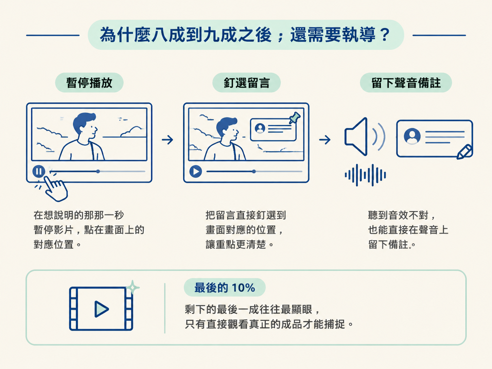

這一節的目標，是做出一個能檢查成品影片的 review page。你可以在影片上播放、暫停、拖曳時間軸，針對畫面、聲音與剪點釘選時間碼回饋；修改後，再回頭檢查更新版本。等你確認滿意，最後才讓它 render 成 1080p MP4。
整條流程可以想成三步：先看真正的成品，像導演一樣留下精確指示；再把修改套用到影片並更新 review page；最後確認沒問題，才輸出成品。動手前，你需要先有一支已經生成的影片，因為這一層處理的是實際看得到、聽得到的版本，不是分鏡草稿。
分鏡通常能把影片帶到目標的八成到九成。聽起來已經很接近，但剩下的那一成往往最容易被看見：可能是配樂太早進來、某句字幕擠在一起，或某個剪點多留了一段不該出現的重錄。
這些問題不是分鏡能完整捕捉的，因為分鏡沒有真正的聲音，也還不是影片本身。要補上最後這段，就得直接觀看成品，再把回饋釘在實際發生問題的時間與位置。
執導聽起來像是更費工的工作，但有了合適的工具，它其實只是把「留言」搬到影片上完成：在想說明的那一秒暫停，點在畫面上的對應位置；聽到音效不對，也能直接對聲音留下備註。

而且 Opus 5.5 的 one-shot 動畫已經很準，通常每一輪只需要少量修正。重點是把時間花在真正影響成品的地方，吹毛求疵沒有必要。
先請它製作覆核用的頁面。這個 prompt 一次交代播放、變速、拖曳時間軸、釘選畫面留言、標記聲音問題、拖曳修剪，以及複製全部留言等功能：
Make me a review page for [your video]. Give me
play and pause, 1x and 2x speed, and a timeline
I can scrub. When I click on the picture, pin a
comment at that time and spot. Let me comment on
the sound too, at the moment I hear it. If a cut
is in the wrong place, let me drag the clip's
start or end to fix it. Add a Copy all comments
button that copies every comment and every trim,
each with its time, as one list I can paste back
to you.如果頁面建立成功，你應該會看到一個可以在本機使用的影片檢查介面。它至少要能做到以下幾件事：
這個頁面就像影片的校稿紙：把問題釘在正確的秒數與位置，不是只在旁邊寫一句「這裡怪怪的」。
把整支影片看過一輪，所有需要修改的地方都標記好之後，按下複製按鈕，再把完整留言貼回去。這一步有一個重要順序：先套用修改、更新 review page，讓你重新檢查；在你明確說完成之前，不要 render 最終影片。
Here are my comments on this version: [paste all
your comments]. Each one has its time and the
spot, sound or trim it's about. Apply every
comment and change nothing else. Then update the
review page with the new version so I can check
it. Don't render the final video until I say
it's done. When I do, render it as a 1080p MP4.這段指令裡有三個關鍵要求：
render 是整個流程中最花時間的一步。把它放到最後，就不用為了尚未確認的版本等待大半天，也不會剛輸出完就發現剪點或聲音還需要修改。
好的執導留言不會只說「再好看一點」。它會指出時間、位置，以及希望改成什麼。以下是實際使用過的留言，每一則都釘在特定時間點：
9.67s, on the stats scene: remove this scene
4.55s, top of the frame: when i say comprehensive guide just show the page and focus on the title of the page: https://platform.claude.com/docs/en/build-with-claude/prompt-engineering/prompting-claude-opus-5-5
29.29s, centre: when highlighting please zoom in to the text這三則留言各自示範了一種常見的執導方式：
它們的共同點是精確：哪一秒、哪個位置、要改成什麼。這樣的留言就像把導演指令寫在影片的正確格子上，執行時不需要猜。
做完這一輪，你會有一個更新後的 review page，裡面已經套用畫面、聲音與剪點的修改。你可以再次播放確認；如果還有問題，就繼續留下時間碼回饋並更新頁面。若你確認所有內容都完成，再要求它 render 成 1080p MP4。
執導是直接對著真正的成品給回饋，因此畫面、聲音與剪點可以一起處理。固定流程是：建立能播放、能釘選留言、能拖曳修剪的 review page；看過一輪後複製所有留言並貼回；等頁面更新後再次檢查；確認滿意，最後才 render 成 1080p MP4。
到這裡，你已經能完成一支影片。不過，如果這是每週都會重複的任務，而且每支影片都要維持相同風格，就不必每次從零開始。下一節會把前面這套做法沉澱下來，變成下一次可以直接接續使用的 BIT 迴圈。